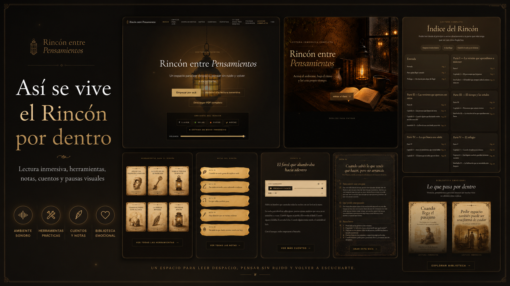
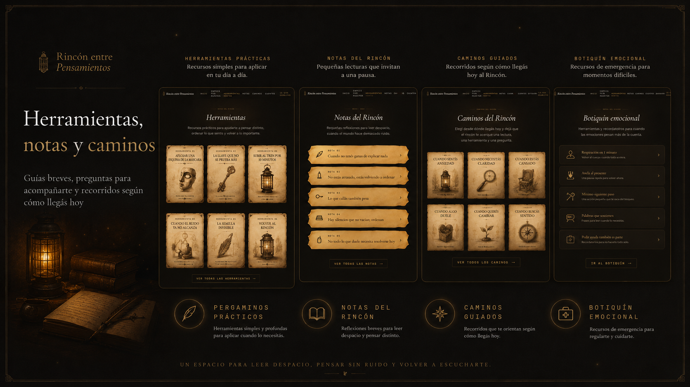
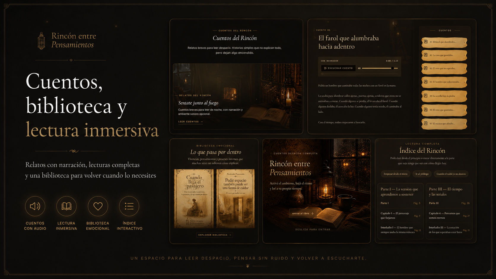
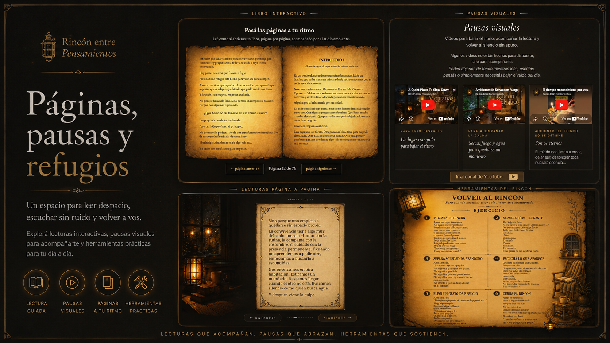

Ver pergamino completo
Ver pergamino completo
01
Para cuando estás cansado de sostener una versión de vos que ya pesa demasiado.
La máscara de cartón
Antes de entrar
Una pequeña pausa antes de leer. Activá un ambiente o entrá en silencio.
lectura inmersiva · calma · herramientas
Cuando la cabeza no se apaga, entrá un momento al Rincón.
vista por dentro
Una mirada a la experiencia completa: lectura inmersiva, herramientas, notas, cuentos, pausas visuales y espacios para volver a escucharte.




una pequeña entrada
No hace falta entenderlo todo de entrada. Podés empezar por una muestra breve, leer despacio y sentir si este espacio habla con algo de lo que venís cargando.
Ver muestra gratiscuentos
Una lectura breve para esos momentos en los que uno sigue esperando sentirse listo, mientras la vida pasa como trenes que no siempre avisan dos veces.
Podés leerla directamente en el pergamino o activar el narrador para acompañar la pausa.

Si esta historia te dejó una pregunta dando vueltas, la experiencia completa sigue por ese mismo camino:
lecturas, cuentos, audio ambiente y herramientas simples para volver a vos cuando el ruido se vuelve demasiado.
Ver experiencia completa
muestra
Leé una parte y fijate si te toca. Sentí si esta experiencia habla con ese lugar tuyo que muchas veces no encuentra palabras. La versión completa suma lectura inmersiva, audio ambiente, cuentos reflexivos y herramientas prácticas para esos momentos en los que no sabés cómo seguir.
lectura interactiva
Usá los botones para recorrer la muestra, parte de la experiencia digital completa. Un espacio privado en crecimiento, creado para quienes buscan leer, pausar y volver a escucharse.


Página 1 de 10
qué es esto
Rincón es una experiencia digital de lectura, calma y herramientas prácticas para momentos donde la mente pesa más de la cuenta.
Es un espacio para entrar despacio, leer sin apuro, acompañarte con audio ambiente y encontrar palabras, cuentos y ejercicios que te ayuden a ordenar lo que sentís.
Adentro vas a encontrar una lectura completa en formato PDF que presenta las bases, una versión inmersiva desde la página, sonidos contemplativos para dormir, cuentos reflexivos narrados para la noche, interludios y herramientas prácticas para volver a vos cuando el ruido se vuelve demasiado.
PDF´s completos descargables para leer y realizar a tu ritmo.
Lectura inmersiva desde la página.
Audio ambiente para acompañar la experiencia con calma.
Cuentos, interludios y herramientas prácticas para momentos reales.
Es un espacio en crecimiento. Rincón se va actualizando con nuevos contenidos, nuevas pausas y nuevas herramientas cada semana.
Está creado para acompañar. Para esos momentos en los que no necesitás más información, sino una pausa real y un lugar donde volver a escucharte.
Es una pequeña guía con herramientas simples para esos momentos en los que la mente se llena de ruido, cuesta ordenar lo que sentís o no sabés por dónde empezar.
Adentro vas a encontrar ejercicios breves para bajar la ansiedad, volver al presente, soltar un poco la carga y dar un primer paso sin exigirte tener todo resuelto.
Dentro vas a encontrar preguntas como estas:
¿Qué estoy cargando hoy que no necesito resolver ahora?
¿Qué parte de mí está intentando sostener más de lo que puede?
Si tuviera que ponerle un nombre a lo que siento hoy, ¿cuál sería?
¿Qué parte de mí necesita silencio y no explicación?
¿Qué estoy midiendo en mí con una vara que no me pertenece?
¿Qué estoy intentando mantener vivo aunque ya me está pidiendo cierre?
¿Qué pequeño gesto puedo hacer hoy para volver a sentirme cerca de mí?
Te dejo una herramienta para encontrar tus respuestas.
también incluye herramientas
La experiencia completa de Rincón entre Pensamientos no se queda solo en leer. También incluye herramientas simples para esos momentos en los que necesitás ordenar lo que sentís, bajar el ruido o dar un primer paso sin exigirte de más.
Ver pergamino completo
La máscara de cartón
 Ver pergamino completo
Ver pergamino completo
Cuando el ruido ya no alcanza
 Ver pergamino completo
Ver pergamino completo
Subir al tren por 10 minutos
Estas son solo algunas puertas de entrada. En la versión completa encontrás más lecturas, interludios y herramientas para acompañar distintos momentos: cansancio emocional, ruido mental, cierres pendientes, soledad, pausa y nuevos comienzos.
cuento incluido
Además de herramientas, la versión completa incluye cuentos e interludios pensados para acompañar esos momentos donde no siempre hay respuestas claras, pero sí una necesidad de volver a mirar hacia adentro.
Muestra breve
Durante mucho tiempo, creyó que cerrar la puerta era una forma de protegerse. No de los demás, sino de todo aquello que no sabía explicar sin romperse un poco.
La habitación no era grande. Tenía una silla, una mesa antigua y una ventana que apenas dejaba entrar la luz. Pero ahí, entre el polvo y el silencio, guardaba pensamientos que nunca se habían animado a salir.
Una noche, cansado de sostener el ruido afuera, se sentó frente a la mesa y dejó de escapar. No encontró una respuesta. Encontró algo más simple: un lugar donde poder escucharse sin tener que fingir.
A veces, sanar no empieza cuando alguien abre la puerta desde afuera. A veces empieza cuando uno deja de tener miedo de entrar a la habitación que venía evitando.
Y esa noche, por primera vez en mucho tiempo, no salió corriendo de sí mismo.
En la versión completa encontrás más cuentos, interludios y pausas para leer cuando necesitás bajar el ruido y volver a vos.
versión completa
Si esta muestra te dejó una pregunta dando vueltas, la versión completa te invita a seguir entrando: lectura en PDF, experiencia inmersiva, audio ambiente, cuentos reflexivos y herramientas para acompañar lo que muchas veces, no se sabe cómo explicar.